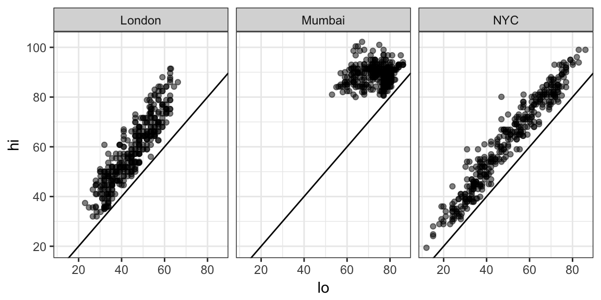
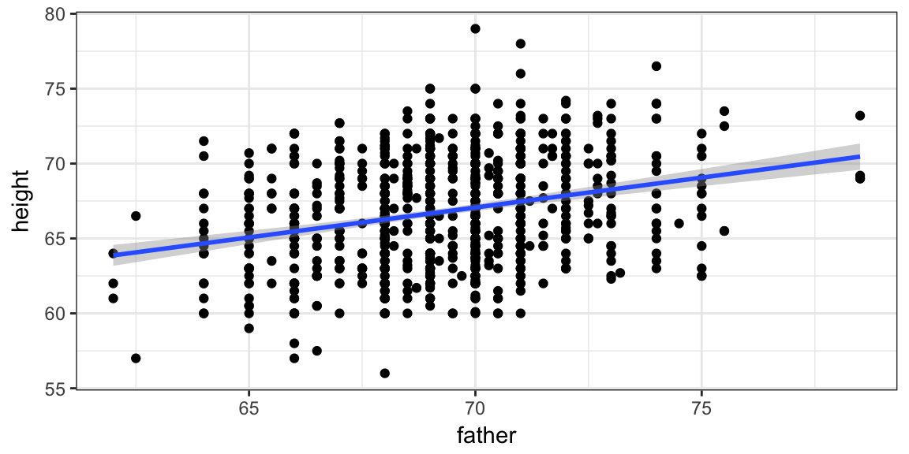

If you are fussy about your plots, you may be wondering how to have more control over things like:
As you can imagine, all of these things can be adjusted pretty much however you like. This tutorial will introduce you to refining plots in ggformula.
Not biological anatomy, rather plot anotomy. In order to talk about plots, it is handy to have words for their various components.
A frame is the bounding rectangle in which the plot is constructed. This
is essentially what you may think of as the x- and y- axes, but the plot isn’t actually required to have visible “axes”.
glyphs or marks are the particular symbols placed on the plot (examples: dots, lines, smiley faces, your favorite emoji, or whatever gets drawn).
facets are coordinated subplots.
scales map raw data over to attributes of the plot.
guides go in the other direction and help the human map graphical attributes back to the raw data. Guides include what you might call a legend, but also things like axis labeling.
coordinates are something like scales for positional attributes and define the coordinate system for the frame.
statistics (stats) transform data before the plot is generated. A common example is the use of stat_bin() to bin raw data before generating a histogram.
In addition to functions like gf_histogram() that require only a single position variable and like gf_point() that require two, there are several gf_ functions that require more than two position variables. How these positions are communicated via slots in the formula is described by the “shape” listed in the quick help for these functions.
Edit the code below to reveal the shape for some of the following: gf_linerange(), gf_errorbar(), gf_errorbarh(), gf_ribbon(), gf_crossbar().
gf_pointrange()The Temps data set has temperature information for three cities for each day in 2013. Edit the code below to use gf_linerange() or gf_pointrange(). For a fancier plot, map the color to one of the three temperature variables.
head(Temps, 3)
gf_ribbon(hi + lo ~ date | city ~ ., data = Temps)Plot titles and axis labels can be set using gf_labs(). Text can be provied for title, subtitle, caption, and the positional attributes (x and y).
Edit some of the labels of this plot as you see fit. Notice that labels can be turned off by setting them to “”. (We’ll learn how to improve the color scheme shortly.)
gf_linerange(lo + hi ~ date | city ~ ., data = Temps,
color = ~ mid) %>%
gf_labs(
title = "Temperatures in three cities",
subtitle = "2013 data",
caption = "Data source: weatherData R package",
x = "", # hide labeling
y = "Temperature (degrees F)"
)Arbitrary text can be placed on a plot using gf_text() or gf_label().
Run the code below.
Then change gf_text() to gf_label() to see how these differ.
Now change things so that the text or labels (your choice) are red.
# summary data used to create annotation
LabData <- Temps %>% group_by(city) %>%
summarise(date = date[which.max(hi)],
hi = max (hi),
description = paste("Highest Hi:", hi, "on", format(date)))
gf_linerange(lo + hi ~ date | city ~ ., data = Temps,
color = ~ mid) %>%
gf_text((hi + 6) ~ date, data = LabData,
label = ~ description, size = 3) %>%
gf_labs(
title = "Temperatures in three cities",
subtitle = "2013 data",
caption = "Data source: weatherData R package",
x = "", # hide labeling
y = "Temperature (degrees F)"
)gf_refine() converts plot elements from native ggplot2 into a form that makes them chainable with ggformula. Those familiar with ggplot2 can replace
p + foo(...)p %>% gf_refine(foo(...))For those not already familiar with ggplot2, in the remainder of this tutorial, we illustrate some of the most common uses of gf_refine().
When we include color = ~ mid to out plot code, each value of the variable mid is assigned a color. It is the job of the color scale to determine which values get mapped to which colors. (A guide can be used so that humans can map back from colors to values when interpreting the plot.) If we don’t like the default color choices, we can tell R to use a different scale.
The situation is similar for other attributes (shape, size, fill, etc.), each of which has its own scale.
The colors in our temperature map have two problems.
We can fix this by selecting a scale for color. This is done by passing the desired scale as an argument to gf_refine(), a general purpose function for refining our plots.
In the example below, we choose a rainbow of colors (and reverse the order) so warmer temperatures have warmer colors. scale_color_gradientn() creates a scale by interpolating between several colors – in this case five colors selected using the rainbow() function.
gf_linerange(lo + hi ~ date | city ~ ., data = Temps,
color = ~ mid) %>%
gf_refine(scale_colour_gradientn(colors = rev(rainbow(5))))You can also use scale_color_gradientn() with colors you enter manually. Add a few colors between navy and red to make something more like the rainbow colors above.
gf_linerange(lo + hi ~ date | city ~ ., data = Temps,
color = ~ mid) %>%
gf_refine(scale_colour_gradientn(colors = c("navy", "red")))Discrete variables can also be mapped to colors. If you want to determine which values are assigned to which colors, you can do this with scale_color_manual()
Refine this plot using scale_fill_manual(). Replace the three colors in the example with three of your own choosing. (Use colors() to list the possible color names.)
gf_ribbon(lo + hi ~ date | city ~ ., data = Temps,
fill = ~ city, alpha = 0.6) %>%
gf_refine(scale_fill_manual(values = c("red", "blue", "orange")))ColorBrewer, by Cynthia Brewer, Mark Harrower, and The Pennsylvania State University, is a collection of nice looking color palettes especially designed for use with maps, but useful for many other purposes as well.
There are 3 types of ColorBrewer palettes, sequential, diverging, and qualitative.
Sequential (type = "seq") palettes are suited to ordered data that progress from low to high. Lightness steps dominate the look of these schemes, with light colors for low data values to dark colors for high data values.
Diverging (type = "div") palettes put equal emphasis on mid-range critical values and extremes at both ends of the data range. The critical class or break in the middle of the legend is emphasized with light colors and low and high extremes are emphasized with dark colors that have contrasting hues.
Qualitative (type = "qual") palettes do not imply magnitude differences between legend classes, and hues are used to create the primary visual differences between classes. Qualitative schemes are best suited to representing nominal or categorical data.
To use a ColorBrewer palette, select scale_color_brewer() for discrete data or scale_color_distiller() for continuous data. The latter interpolates colors within one of the categorical palettes from ColorBrewer.
Experiment with different colors by choosing different values for type and palette.
gf_ribbon(lo + hi ~ date | city ~ ., data = Temps, fill = ~ city, alpha = 0.5) %>%
gf_refine(scale_fill_brewer(type = "qual", palette = 2))
gf_linerange(lo + hi ~ date | city ~ ., data = Temps, color = ~ mid) %>%
gf_refine(scale_color_distiller(type = "div", palette = 3))Other scales work similarly.
As the name suggests, coord_flip() reverses the roles of the x- and y-axes. This is most useful for glyphs that ggplot2 only provides in a “vertical” version, such as boxplots and violin plots.
Make horizontal violin plots by inserting coord_flip() into gf_refine(). Change the plot to boxplots if you prefer those.
gf_violin(hi ~ city, data = Temps) %>%
gf_refine()When the x- and y-axes are on the same scale, it is sometimes good to force both scales to be rendered at the same size. This also forces an identity line to have a true 45 degree slope.
Use coord_equal() to force equally-sized coordinate scales in the plot below. 
coord_trans() is used to construct scales with a transformation built in.
The example below isn’t very useful, but demonstrates two of the transformations that are available. Find out more with ?coord_trans().
gf_point(hi ~ lo | city, data = Temps, alpha = 0.5) %>%
gf_abline(slope = 1, intercept = 0) %>%
gf_refine(coord_trans(x = "log", y = "sqrt"))Built-in transformations include asn_trans(), atanh_trans(), boxcox_trans(), date_trans(), exp_trans(), hms_trans(), identity_trans(), log10_trans(), log1p_trans(), log2_trans(), log_trans(), logit_trans(), probability_trans(), probit_trans(), reciprocal_trans(), reverse_trans(), sqrt_trans(), and time_trans(). New transformations can be created using trans_new() in the scales package.
Often it is useful to limit or expand the view of the data presented in a plot. There are three ways this can be done.
Filter the data and build the plot only from the resulting (smaller) data set.
Use gf_lim() to set limits for the x- and y-axes.
Use scales for x and y to set the limits.
In this section we will use a different data set. Galton contains data collected by Galton recording the heights of parents and sons.

ShortDads <- Galton %>% filter(father <= 68)
gf_point(height ~ father, data = ShortDads) %>%
gf_smooth(height ~ father, method = "lm") gf_point(height ~ father, data = Galton) %>%
gf_smooth(height ~ father, method = "lm") %>%
gf_lims(x = c(NA, 68))gf_point(height ~ father, data = Galton) %>%
gf_smooth(height ~ father, method = "lm") %>%
gf_refine(scale_x_continuous(limits = c(NA, 68)))A number of predefined themes exist that control the appearance of non-data elements of plots. In this tutorial, we set the default theme using
theme_set(theme_bw())Other themes include theme_minimal(), theme_classic(), theme_gray(), theme_light(), theme_map(), and theme_quickmap(). The ggthemes package includes some additional themes, including theme_economist(), theme_economist_white(), theme_excel(), theme_fivethirtyeight(), theme_stata(), theme_tufte(), and theme_wsj(). Many of these themes mimic the look of other software packages or of popular publications.
The theme can be set for an individual plot using gf_theme().
Run the code below.
Choose a different theme in place of theme_fivethirtyeight()
Themes have optional arguments. Try theme_fivethrityeight(base_size = 8). Experiment with different sizes and themes.
gf_ribbon(lo + hi ~ date | city ~ ., data = Temps,
fill = ~ city, alpha = 0.5) %>%
gf_labs(title = "Themes can change overall look of a plot") %>%
gf_theme(theme = theme_fivethirtyeight())Individual theme elements can also be adjusted.
Edit the code below to adjust theme elements. See ?theme for details regarding the elements and how to change them.
gf_ribbon(lo + hi ~ date | city ~ ., data = Temps,
fill = ~ city, alpha = 0.5) %>%
gf_labs(title = "Temperatures in Three Cities") %>%
gf_theme(text = element_text(color = "red"),
plot.title = element_text(hjust = 0.5),
axis.text = element_text(color = "goldenrod", face = "italic"))?themeMost often, users will have little need to adust the stat used to make layer of a plot since the default stat is usually what you need. For example, the default stat for gf_histogram() is stat_bin(), which bins the data before plotting the rectangular bars. So the following are equivalent.
gf_histogram( ~ hi | city, data = Temps)
gf_bar( ~ hi | city, data = Temps, stat = "bin")This also explains why the message reported when you create a historam without setting binwidth is coming from stat_bin. Notice that the stat can be specified by a quoted string that names the part after stat_ or it can be specified by providing the function (potentially with optional arguments included).
Other non-identity stats that get used with particular functions include
stat_density() gets used with gf_density() and gf_dens()stat_density2d() gets used with gf_density2d()stat_count() gets used with gf_bar() (gf_col() uses stat_identity())Occasionally it is useful to use a non-default stat. In particular, stat_summary() and stat_summary_bin() can be used to avoid common data transformation situations where a function is used to aggegrate over unique values of x or over bins of x values.
# Plot highest high temperature each month
gf_point(hi ~ (month(date, label = TRUE)), color = ~ city, data = Temps,
stat = "summary", fun.y = max) %>%
gf_labs(x = "month", title = "Highest temperature each month in three cities") These stats are designed to work with gf_linerange() and gf_pointrange(), so three summary functions can be specified. fun.ymin and fun.ymax return results that are available in ..ymin.. and ..ymax.
# Plot min, median, and max high temperature each month
gf_pointrange(hi + ..ymin.. + ..ymax.. ~ (month(date, label = TRUE)), color = ~ city, data = Temps,
position = position_dodge(width = 0.2),
stat = "summary",
fun.y = median, fun.ymin = min, fun.ymax = max) %>%
gf_labs(x = "month",
title = "Median, min, and max high temperature each month in three cities",
caption = "jitter used to avoid overplotting") The default summary function is mean_se which computes the mean, and the mean one standard errors added and subtracted.
gf_pointrange(hi + ..ymin.. + ..ymax.. ~ (month(date, label = TRUE)), color = ~ city,
data = Temps, stat = "summary", position = position_dodge(width = 0.3)) %>%
gf_labs(x = "month", caption = "mean +/- one SE")We can create our own functions for use with stat_summary. The funcition is easiest to use if we write the function to take a vector x as input and to produce a data frame with columns y, ymin, and ymax. Here is an example that creates a “3-number summary” that can be used to present the median and first and third quartiles.
median_quantiles <- function(x, central = 0.5, ...){
data.frame(
y = median(x, ...),
ymin = quantile(x, 0.5 - central/2, ...),
ymax = quantile(x, 0.5 + central/2, ...)
)
}
gf_pointrange(hi + ..ymin.. + ..ymax.. ~ (month(date, label = TRUE)), color = ~ city,
data = Temps, stat = "summary", fun.data = median_quantiles,
fun.args = list(central = 0.6),
position = position_dodge(width = 0.3)) %>%
gf_labs(x = "month",
title = "High temperatures by month in three cities",
caption = "median and central 60% of data"
)